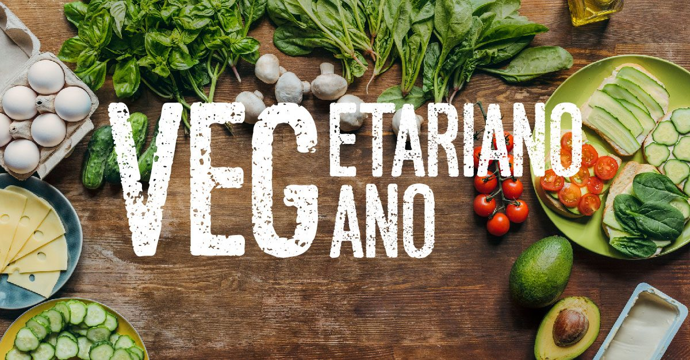

Veganos e Vegetarianos: Tudo aquilo que não contaram para você.

O que é o Veganismo?
O veganismo é um estilo de vida que busca excluir todas as formas de exploração e crueldade animal. Os veganos evitam o consumo de produtos de origem animal, incluindo carne, peixe, laticínios, ovos, mel e produtos testados em animais. Além disso, o veganismo tem benefícios para o meio ambiente e a saúde humana.
O que é o Vegetarianismo?
O vegetarianismo é um estilo de vida que exclui o consumo de carne, mas permite o consumo de produtos de origem animal, como laticínios e ovos. Existem diferentes tipos de vegetarianismo:
- Ovo-lacto-vegetarianismo: Exclui carne e peixe, mas inclui laticínios e ovos.
- Lacto-vegetarianismo: Exclui carne, peixe e ovos, mas inclui laticínios.
- Ovo-vegetarianismo: Exclui carne, peixe e laticínios, mas inclui ovos.
Benefícios do Veganismo e do Vegetarianismo
O veganismo e o vegetarianismo têm vários benefícios, incluindo:
- Redução do impacto ambiental, como a diminuição das emissões de gases de efeito estufa e a preservação dos recursos naturais.
- Ética e proteção animal, evitando a exploração e o sofrimento dos animais criados para alimentação e outros fins.
- Benefícios para a saúde, como a redução do risco de doenças cardíacas, diabetes tipo 2 e certos tipos de câncer.
Alimentos Veganos e Vegetarianos
Existem muitos alimentos deliciosos e saudáveis adequados para veganos e vegetarianos, como:
- Frutas e vegetais frescos.
- Cereais integrais, como arroz, quinoa e aveia.
- Legumes e feijões, como lentilhas, grão-de-bico e feijão preto.
- Nozes e sementes, como amêndoas, castanhas, linhaça e chia.
- Substitutos de carne à base de plantas, como tofu, tempeh e hambúrgueres vegetais.
- Leites vegetais, como leite de amêndoa, soja e aveia.
Mitos Comuns sobre Veganismo e Vegetarianismo
Existem alguns mitos comuns que cercam o veganismo e o vegetarianismo. Aqui estão alguns exemplos:
-
Mito 1: "É difícil obter proteína suficiente em uma dieta vegana ou vegetariana."
A realidade é que é possível atender às necessidades de proteína consumindo uma variedade de fontes vegetais, como legumes, grãos integrais, nozes e sementes.
-
Mito 2: "As dietas veganas ou vegetarianas são carentes de nutrientes essenciais, como ferro e cálcio."
Na verdade, é possível obter ferro e cálcio em quantidades adequadas por meio de alimentos como vegetais folhosos verdes, legumes, tofu, sementes de gergelim, entre outros.
-
Mito 3: "É muito caro seguir uma dieta vegana ou vegetariana."
Embora alguns produtos veganos ou vegetarianos possam ser mais caros, uma dieta baseada em alimentos integrais, como grãos, legumes e vegetais, pode ser econômica e acessível.
-
Mito 4: "As dietas veganas ou vegetarianas são monótonas e sem sabor."
Com uma variedade de receitas e opções disponíveis, as dietas veganas e vegetarianas podem ser saborosas, criativas e diversificadas.